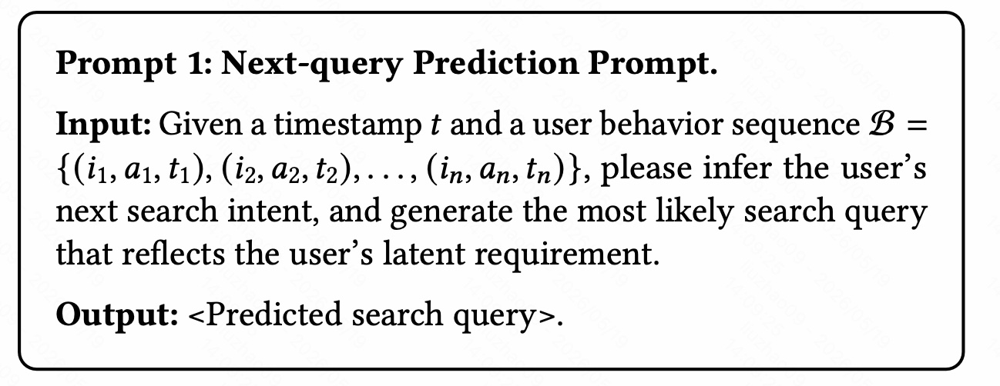
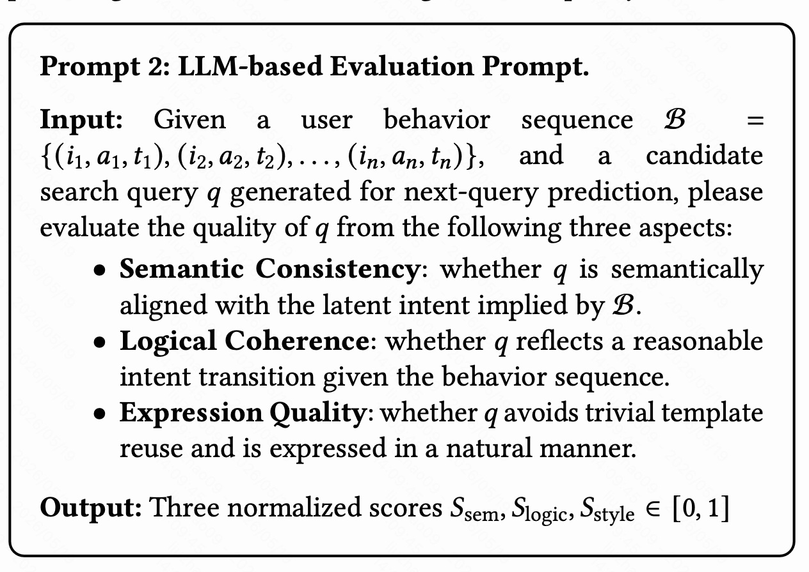
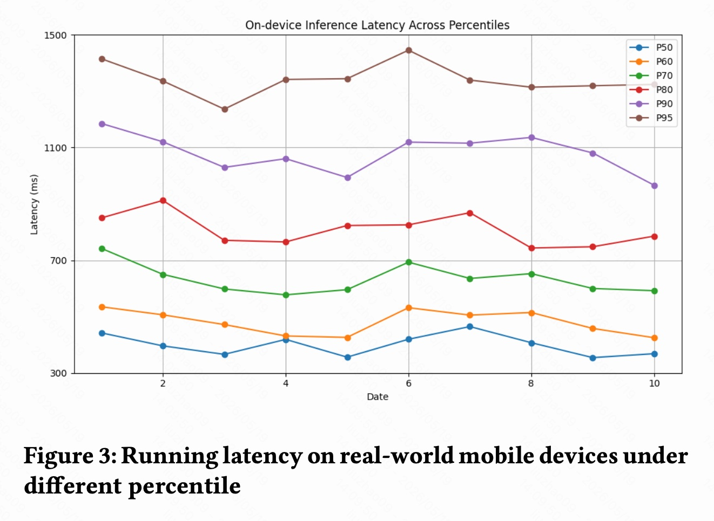

这里阅读一篇阿里淘宝天猫集团 SIGIR 2026 的论文：《RecGPT-Mobile: On-Device Large Language Models for User Intent Understanding in Taobao Feed Recommendation》。
论文链接：https://arxiv.org/pdf/2605.04726
这篇文章可以看作是 RecGPT 在端侧推荐场景上的进一步落地：不是把大模型放在云端做复杂推理，而是把一个轻量化 LLM 放到手机端，让它根据用户最近的点击、加购、收藏、购买等行为，实时推断用户下一步可能的搜索意图，再把这个意图转成 query/tags 去触发召回。核心目标是解决一个很工业的问题：用户意图变化很快，但云端链路和传统日志回传机制天然有延迟；如果能在端侧更快地理解当前 session 意图，就能更及时地调整推荐结果。
一句话概括：
RecGPT-Mobile 把“用户行为序列 → 显式搜索意图 query”的推断过程放到移动端，用轻量 LLM + 自适应 prompt + 意图漂移触发机制，在端侧资源受限的情况下提升淘宝 feed 推荐的实时性和转化效果。
论文中比较关键的结果：
- 部署侧使用 Qwen3-0.6B-Quant 作为移动端模型。
- 离线自动评估中，LoRA 微调显著提升生成 query 的语义相关性、逻辑一致性和表达质量；量化后只带来小幅退化。
- 淘宝移动端线上 A/B 覆盖千万级用户、4 个场景，平均提升 CLICK +1.8% / PAY +2.7% / GMV +2.5%。
- 端侧延迟在不同日期、不同 percentile 下整体稳定，说明这不是一个只在离线 demo 中可行的方案。
1. 背景
1.1 为什么要做端侧 LLM 推荐
现代电商推荐系统通常是云端架构：用户在 App 里产生点击、加购、收藏、购买等行为，这些行为被上传到服务端，服务端更新用户画像、召回候选、排序、重排，再把推荐结果返回给客户端。
这种架构的优势是模型容量大、算力强、工程体系成熟，但在“实时意图理解”上存在天然问题：
- 链路延迟：行为从端上采集、上传、进入特征中心、被服务端模型消费，中间有通信和系统延迟。
- session 内意图变化快：用户可能刚刚点击了“跑鞋”，又加购了“运动袜”，此时下一步意图可能已经从泛化的运动装备变成了更明确的搭配/补充购买。
- 云端模型不一定及时看到端上最新行为：尤其是 feed 场景下，用户连续滑动、点击、回退、加购，这些细粒度行为如果不能快速进入推荐链路，会错过调整推荐结果的最佳时机。
- 云端 LLM 推理成本高：如果每次 session 意图变化都调用云端大模型，延迟和成本都难以接受。
因此，这篇文章希望把一个更轻量的大模型直接放到移动设备上，让端侧模型在本地理解最新行为，并把结果以 query/tags 的形式交给召回系统。
1.2 为什么任务定义为 next-query prediction
论文没有让端侧 LLM 直接生成下一个 item，也没有让它完整承担召回或排序，而是把任务定义为：
给定用户最近的异构行为序列，预测用户下一步可能搜索的 query。
这个设计很实用，因为 query 是推荐系统和搜索系统之间非常自然的桥：
- 比 item 更短、更稳定：直接生成 item ID 需要面对巨大 item space，而 query 空间更贴近语义表达。
- 更可解释：模型输出“露营折叠椅”“通勤防晒衣”这样的 query，比输出一串候选商品 ID 更容易被理解和调试。
- 方便接入现有搜索/召回系统：淘宝已经有成熟的搜索召回能力，端侧 LLM 只需要生成意图表达，后续检索仍然可以由云端模块完成。
- 适合端侧轻量化：端侧不需要维护巨大候选库，也不需要做复杂全量召回，只做“行为 → 意图”的语义压缩。
所以 RecGPT-Mobile 的定位不是“完全端侧推荐系统”，而是一个端侧 intent agent：它把隐式行为转成显式意图，再把这个意图接入云端召回。
1.3 和已有工作的关系
论文把相关工作分成三类：
- 端侧推荐系统：如 EdgeRec、快手端侧实时推荐、DIR 等，重点是把排序/重排或特征处理放到移动设备，降低信号延迟。
- 云端 LLM 推荐系统：如 HSTU、OneRec、RecGPT 等，重点是用生成式建模或 LLM 做推荐理解，但推理通常仍部署在云端。
- 移动端 LLM：包括量化、剪枝、蒸馏、移动端推理引擎等，目标是让小模型在手机端可运行。
RecGPT-Mobile 的位置比较清楚：
- 它继承 RecGPT 的“意图中心化”思路：推荐不只是拟合日志，而是显式理解用户当前需求。
- 它借鉴端侧推荐的实时性优势：最近行为在端上马上可见。
- 它利用移动端 LLM 的压缩部署能力：用 Qwen3-0.6B-Quant 这种小模型在手机上做推理。
2. 系统整体框架

图 1 是 RecGPT-Mobile 的整体框架，可以分成端侧 Client Services 和云侧 Cloud Services。
2.1 端侧模块
端侧主要有三个模块。
2.1.1 User Behavior Collection Module
这个模块负责在本地采集和缓存用户行为。论文里重点关注的行为包括：
- click：点击商品；
- add-to-cart：加购；
- favorite：收藏；
- purchase：购买。
这些行为的意图强度不同。比如 click 可能只是浏览兴趣，favorite 和 add-to-cart 更接近明确兴趣，purchase 则可能意味着当前需求已经完成，但也可能产生新的互补需求。
端侧采集的意义在于：这些信号不必等到完整上传、清洗、进入云端特征中心后才能被使用，而是可以立刻作为 intent agent 的输入。
2.1.2 Prompt Construction Module
这个模块负责把原始行为和用户画像转换成 LLM 可理解的 prompt。
这里的难点不是“拼一个 prompt”这么简单，而是在移动端约束下选择最合适的信息：
- 行为太少，模型可能无法判断意图；
- 行为太多，prompt 过长，端侧延迟和内存压力都会上升；
- 行为类型混杂，模型需要理解 click/cart/favorite/purchase 的不同意图权重；
- 不同场景需要不同模板，比如购物车页、订单页、物流页、支付成功页上的用户意图并不一样。
所以后面论文专门提出了 Adaptive Prompt Construction，用来做模板选择、结构选择和预算控制。
2.1.3 Intent Agent
Intent Agent 是端侧 LLM，作用是把复杂行为信号转成明确的用户意图 query。
例如用户最近行为可能是：
- 点击“轻薄羽绒服”；
- 收藏“女款长款羽绒服”；
- 加购“防风保暖打底衫”。
模型不应该简单复读商品标题，而应该推断出更抽象的意图，比如“冬季保暖通勤女装”或“轻薄保暖羽绒服”。这个 query 再进入搜索/召回模块，就能帮助推荐系统召回更符合当前 session 的商品。
2.2 云侧模块
云侧主要有两个模块。
2.2.1 Item Retrieval Module
端侧 Intent Agent 生成 query/tags 后，会向云端发起 request。Item Retrieval Module 根据这个 query 做召回，并返回 interested items 给客户端。
这说明 RecGPT-Mobile 并不是把完整候选库搬到端上，而是采用“端侧理解 + 云侧检索”的混合架构：
- 端侧负责最新行为理解；
- 云侧负责大规模候选检索、商品库更新、召回能力。
这个拆分非常符合工业系统约束。
2.2.2 LLM Training Module
云侧还负责 LLM Training Module，包括：
- Supervised Fine-tuning；
- Prompt Adaptation；
- Inference Optimization；
- Model Synchronization。
也就是说，模型训练、更新和同步主要发生在云侧；端侧只运行被压缩、同步后的模型版本。
3. 任务定义
论文形式化定义了 next-query prediction。
设用户行为序列为：
其中：
- $i_T$ 表示第 $T$ 次交互的 item；
- $a_T \in \{\text{click}, \text{cart}, \text{favorite}, \text{purchase}\}$ 表示行为类型；
- $t_T$ 表示行为时间。
目标是在给定行为序列 $B$ 的情况下，预测下一个潜在搜索 query $q \in Q$：
这里有两个关键点：
- 推荐目标变成语义意图预测：模型不是直接预测下一个点击商品，而是预测下一步搜索意图。
- 资源约束是目标的一部分：端侧模型不能只追求准确率，还必须满足延迟、内存、功耗、token budget 等约束。
这也是 RecGPT-Mobile 和普通云端 LLM 推荐最大的区别：云端方案通常优先追求效果，端侧方案必须在效果和资源之间做平衡。
4. 监督微调：如何构造训练数据
论文用多源数据构造 SFT 样本，让模型学习从行为序列生成 query。
训练数据组成如下：
| Sample Type | Data Source | Ratio | 作用 |
|---|---|---|---|
| Behavior-driven | Purchase & search logs | 60% | 从真实购买和搜索日志中学习行为到 query 的映射 |
| Co-purchase | Co-purchase item matrix | 20% | 用共购关系挖掘互补需求 |
| LLM-based | GPT-based rewriting | 15% | 对规则样本做改写，提升语言多样性 |
| Human-annotated | Manually annotated data | 5% | 用人工标注做质量校准和高可信评估 |
4.1 Behavior-driven 样本
这部分占比最高，达到 60%。它来自真实购买日志和搜索日志。
直觉上，如果用户先浏览/加购/购买了一些商品，随后又搜索了某个 query，那么这个 query 就可以被看成是该行为序列后的显式意图表达。模型通过学习大量这样的样本，可以逐渐掌握：
- 哪些行为组合代表同一类需求；
- 不同行为类型的意图强弱；
- 购买后可能出现哪些补充性需求；
- 用户从浏览到明确搜索之间的语义迁移。
4.2 Co-purchase 样本
这部分占 20%，来自 item-level co-purchase matrix。
它的意义在于挖掘“互补关系”。例如用户购买手机后，下一步可能搜索手机壳、贴膜、充电器；购买露营帐篷后，可能搜索防潮垫、折叠椅、营地灯。
这类需求不一定能从单次行为直接看出来，但共购矩阵能提供统计上的互补信号。把这种信号转成训练样本，可以让 Intent Agent 不只是复述历史商品，而是能够推断合理的下一步需求。
4.3 LLM-based 改写样本
这部分占 15%，通过 GPT-based rewriting 得到。
规则样本通常表达比较单一，比如都写成“根据用户行为预测下一个搜索词”。如果模型只学这种模板，生成的 query 可能过于机械。LLM 改写的作用是增加语言表达多样性，同时保持语义不变，使模型输出更自然。
4.4 Human-annotated 样本
人工标注只占 5%，但作用很关键：
- 校准自动构造数据中的噪声；
- 提供高质量样本作为模型对齐参考；
- 为后续评估提供更可靠的质量标准。
在工业系统里，全量人工标注成本太高，所以这种“少量人工 + 大量日志/规则/LLM 增强”的数据结构比较常见。
4.5 Next-query Prediction Prompt

训练 prompt 的形式很简单：
- 输入：时间戳 $t$ 和用户行为序列 $B$；
- 输出：最可能反映用户潜在需求的搜索 query。
这里值得注意的是，prompt 约束的是“latent requirement”，也就是潜在需求。它不是要求模型总结用户已经做过什么，而是要根据已经发生的行为推断用户接下来可能想找什么。
5. 自适应 Prompt 构造

端侧 LLM 最大的问题之一是 prompt 不能无限长。因此论文提出 Adaptive Prompt Construction，在不同场景和不同用户行为下动态选择 prompt 模板、结构组件，并控制资源预算。
算法输入包括：
- 行为序列 $B=\{(i_t,a_t,t_t)\}_{t=1}^T$；
- 当前场景 $s$；
- template pool $\mathcal{T}$；
- component set $C$；
- 轻量 scorer $M_{\text{score}}$；
- 端侧预算 $C_{\max}$，包括 latency/memory/token。
输出是最终 adaptive prompt $P^*$。
5.1 Stage 1：行为特征抽取
算法先从行为序列里抽取一个紧凑特征向量：
其中：
- $\Phi_{\text{act}}$：action type，表示点击、加购、收藏、购买等行为类型分布；
- $\Phi_{\text{rec}}$：recency，表示行为的新近程度；
- $\Phi_{\text{div}}$：diversity，表示行为覆盖的品类、品牌或语义标签是否分散；
- $\Phi_{\text{freq}}$：frequency，表示用户在某些语义上的重复交互频率。
这个步骤的作用是把原始行为序列压缩成可被 scorer 使用的结构化特征。换句话说，Prompt Construction Module 不会一开始就把所有行为都塞给 LLM，而是先判断当前行为模式是什么。
5.2 Stage 2：模板级自适应
对于当前场景 $s$ 下的候选模板 $T_k \in \mathcal{T}_s$，模型计算：
然后通过 softmax 得到模板选择概率：
最终选择分数最高的模板：
这里可以理解为：不同场景、不同用户行为模式，需要不同 prompt 模板。
例如：
- 支付成功页更适合强调“已购买商品后的补充需求”；
- 购物车页更适合强调“用户已经有较强购买意图的商品集合”；
- 物流页可能更适合从已买商品推断后续搭配或复购需求；
- 订单列表页可能更偏历史订单相关需求。
论文没有展开每个模板的具体内容，但从算法看，模板选择是被场景和行为特征共同控制的。
5.3 Stage 3：结构级自适应
模板选定后，算法还会决定是否加入额外结构组件 $c \in C$。
每个候选组件的边际收益为：
如果满足：
则把该组件加入 prompt。
这一步很关键，因为 prompt 不是越详细越好，而是要看额外信息是否真的有用。可能的组件包括用户画像、商品标题、品类、品牌、行为时间、最近高意图动作、重复行为摘要等。论文没有列出完整组件集合，因此这里更应该把它理解为一种通用的 prompt 结构选择机制。
5.4 Stage 4：预算约束与最终化
最后，算法在 prompt 的子集里选择在预算内得分最高的版本：
然后把具体行为 token 实例化到 $P^*$ 中，作为端侧 LLM 的输入。
这一步是端侧部署的核心。云端大模型可以接受长 prompt，但移动端模型必须把 token 数、延迟、内存都控制住。因此 RecGPT-Mobile 的 prompt 构造本质上是一个“信息选择问题”：在有限预算下选择最能提升意图预测的信息。
6. 移动端推理优化：什么时候触发 LLM
如果每次点击都调用端侧 LLM，延迟、功耗和电量都会不可接受。因此论文设计了 Mobile Intent Agent Trigger Pipeline，核心思想是：
只有当用户意图发生明显漂移时，才触发 LLM 更新意图；如果用户行为稳定，就复用缓存结果。

6.1 行为映射：从行为到语义标签分布
给定一个滑动窗口内的用户行为序列 $B$，系统先把每次交互映射成离散语义标签，例如：
- category；
- brand；
- intent type；
- 商品属性 tag。
这样可以得到当前窗口的标签分布 $P_B$。
这个分布比原始 item 序列更适合做触发判断，因为触发机制关心的不是“用户是否点了一个新 item”，而是“用户的语义兴趣是否发生变化”。
6.2 意图漂移检测的三个信号
论文从三个角度度量当前窗口和上一次触发点之间的意图漂移。
6.2.1 Entropy：兴趣是更聚焦还是更发散
标签分布的熵为：
当前窗口和上一次触发点之间的熵变化为：
熵变化能捕捉用户意图状态的变化：
- 如果用户原来在很多品类间浏览，现在集中到一个品类，熵会下降，表示意图变得聚焦；
- 如果用户原来只看一个品类，现在开始探索很多品类，熵会上升，表示意图变得发散。
6.2.2 Jaccard Similarity：语义集合是否变化
设当前窗口的标签集合为 $Z^{(t)}$，上一次触发点的标签集合为 $Z^{(t-1)}$，则 Jaccard 相似度为：
如果 Jaccard 相似度低，说明用户关注的标签集合换了一批，语义焦点发生了明显转移。
例如：
- 上一窗口主要是“手机、数码、充电器”；
- 当前窗口主要是“女装、裙子、通勤”；
这时 Jaccard 会很低，应该触发新的意图推断。
6.2.3 JS Divergence：分布比例是否变化
Jaccard 只看标签集合，不看标签比例。即使标签集合相同，用户关注的强度也可能变化。因此论文又引入 Jensen-Shannon divergence：
其中：
JS divergence 用来衡量两个标签分布的整体差异。它能捕捉一种情况：标签集合差不多，但用户在其中某一类上的兴趣突然增强。
6.3 综合意图漂移分数
论文把三个信号融合成一个 intent drift score：
其中：
当：
时，系统才触发 LLM 更新 prompt 并生成新的 query。
在线实验中，论文使用：
可以看到，熵变化权重稍高，说明作者更重视“用户兴趣状态从发散到聚焦，或从聚焦到发散”的变化。
6.4 资源评估与缓存
图 2 中还有 Resource Assessment、Write Cache、Record Timestamp 等模块，说明触发机制不只是判断“该不该推理”，还要考虑当前端侧资源状态。
完整流程可以理解为：
- 用户产生 click/cart/buy/fav 行为；
- 行为被映射为语义标签；
- 系统比较当前窗口和 anchor point；
- 计算 entropy、Jaccard、JS divergence；
- 若意图漂移足够大，且资源允许，则调用 Intent Agent；
- 生成的新 query 写入缓存，并记录触发时间；
- 如果短时间内意图未明显变化，则复用缓存结果。
这套机制解决了端侧 LLM 部署里的关键矛盾：既要实时，又不能频繁推理。
7. 离线评估
论文的离线评估不是用传统 Recall/NDCG，而是用 LLM-based automatic evaluation 来评估生成 query 的质量。

评估 prompt 要求评价候选 query 的三个维度：
- Semantic Consistency：query 是否和行为序列隐含意图语义一致；
- Logical Coherence：query 是否代表合理的意图转移；
- Expression Quality：query 是否自然，是否避免简单模板复用。
最终得到三个归一化分数：
7.1 离线结果

这里需要注意，表格里的 Eval. Model 是用于自动评估的评估模型大小，而不是端侧部署模型大小。论文中端侧 base model 是 Qwen3-0.6B，并比较 Base、LoRA、LoRA+Quant 这几种目标模型。
从表 2 可以看到几个结论。
7.1.1 LoRA 微调显著有效
在三个评估模型下，LoRA 都明显优于 Base：
- Qwen3-4B 评估：Total 从 0.677 提升到 0.829；
- Qwen3-8B 评估：Total 从 0.613 提升到 0.783；
- Qwen3-30B 评估：Total 从 0.654 提升到 0.808。
这说明原始小模型即使具备语言能力，也不自然适合“行为序列 → 搜索意图”的任务；必须通过推荐场景数据做轻量微调。
7.1.2 量化带来的质量损失可控
LoRA+Quant 相比 LoRA 有一定下降：
- Qwen3-4B 评估：0.829 → 0.794；
- Qwen3-8B 评估：0.783 → 0.760；
- Qwen3-30B 评估：0.808 → 0.780。
但下降幅度不大，说明量化后仍保留了大部分语义、逻辑和表达能力。这是移动端部署能成立的关键证据。
7.1.3 语义和逻辑都被提升
提升不是只发生在 expression style 上，而是 semantic 和 logic 都有明显提升。例如 Qwen3-4B 评估下：
- $S_{\text{sem}}$：0.752 → 0.885；
- $S_{\text{logic}}$：0.621 → 0.792；
- $S_{\text{style}}$：0.657 → 0.811。
这说明模型不是只学会了更自然地写 query，而是更好地理解行为序列中的潜在意图和意图转移。
8. 线上 A/B 实验
论文在 Mobile Taobao 上做了一个月线上实验，覆盖千万级用户，包含 4 个场景。
由于移动端存储限制，线上部署使用 Qwen3-0.6B-Quant。

8.1 整体结果
表 3 的平均提升为：
- CLICK +1.8%
- PAY +2.7%
- GMV +2.5%
这个结果比较有价值，因为 PAY 和 GMV 的提升高于 CLICK，说明端侧 intent agent 不只是提高了点击吸引力，也对更深层转化有帮助。
8.2 分场景结果
四个场景的结果如下：
| Scenario | CLICK | PAY | GMV |
|---|---|---|---|
| Payment Success Page | +1.3% | +2.3% | +2.5% |
| Shipment Tracking Page | +2.4% | +2.9% | +3.0% |
| Shopping Cart Page | +2.5% | +2.7% | +2.9% |
| Order List Page | +0.8% | +1.8% | +1.8% |
| Average | +1.8% | +2.7% | +2.5% |
几个观察：
- 购物车页和物流页提升更明显：这两个场景和用户近期强意图行为高度相关。购物车代表当前购买意向，物流页代表刚完成交易后的后续需求或关联需求。
- 订单列表页提升较小：订单列表可能更多承载历史回顾、售后、复购等复杂动机，当前 session 意图未必像购物车页那样集中。
- 转化指标提升稳定：四个场景 PAY 都有 +1.8% 以上提升，说明 query 生成后的召回结果确实更接近可购买需求。
8.3 端侧延迟

图 3 展示了真实移动设备上的端侧推理延迟。图中按 P50/P60/P70/P80/P90/P95 展示了多天的延迟变化。
从图上看，大致有几个特点：
- P50 多数在 350ms 到 500ms 左右；
- P70 多数在 580ms 到 700ms 左右；
- P90 大约在 950ms 到 1150ms 左右；
- P95 大约在 1200ms 到 1450ms 左右；
- 不同日期有波动，但各 percentile 曲线没有出现持续恶化。
这说明 Qwen3-0.6B-Quant 在移动端运行并非没有成本，但结合触发机制和缓存机制后，整体延迟处于可控范围。尤其是在推荐系统里，端侧 LLM 可以异步更新 intent cache，而不一定阻塞所有 UI 展示。
9. 方法背后的核心逻辑
9.1 为什么不是每次行为都推理
如果用户连续点击同一类商品，比如连续浏览 5 个“男士跑鞋”，每次点击都调用 LLM 生成 query，意义不大。因为用户意图没有本质变化，缓存的 intent query 仍然有效。
相反，如果用户从“男士跑鞋”突然转向“儿童书包”，或者从泛化浏览转向加购某个明确品类，此时才需要更新 intent。
因此触发机制的本质是：
用轻量统计信号判断 LLM 是否值得被调用。
这点非常重要。端侧 LLM 的工业可用性往往不只取决于模型小不小，还取决于调用频率是否可控。
9.2 为什么要输出 query/tags 而不是推荐解释
LLM 在推荐里可以做很多事：解释、打分、排序、生成标题、生成理由。但 RecGPT-Mobile 选择输出 query/tags，是因为这是最适合端侧部署的中间表示。
query/tags 有几个优点：
- 短，生成成本低；
- 可直接喂给检索系统；
- 可缓存；
- 可监控和人工解释；
- 出错时比较容易 fallback，比如回退到上一次 query 或默认召回。
如果让端侧 LLM 直接输出推荐列表，则会面临候选空间巨大、商品实时性、库存价格、召回覆盖、排序目标等一系列问题，工程复杂度会高很多。
9.3 为什么需要自适应 prompt
用户行为序列是异构的，场景也是异构的。如果所有场景都用同一个 prompt，就会有两个问题：
- prompt 不足以表达场景差异；
- prompt 可能在端侧预算下浪费 token。
例如，在支付成功页，购买行为是非常强的意图信号；在购物车页，加购商品集合是核心；在物流页，已购买商品和时间上下文更重要。自适应 prompt 的作用就是根据行为特征和场景选择最有价值的信息。
可以把它理解成端侧 LLM 前面的“prompt routing”：
- 先判断当前用户行为模式；
- 再选择合适模板；
- 再选择必要组件；
- 最后在 token/latency/memory 预算下剪枝。
9.4 为什么 SFT 数据要混合多种来源
单靠真实行为日志会遇到噪声和覆盖问题：
- 用户可能搜索了不相关 query；
- 购买和后续搜索之间不一定有因果关系；
- 长尾 query 覆盖不足；
- 真实日志里的表达可能非常稀疏。
因此论文混合了 behavior-driven、co-purchase、LLM rewriting、human annotation：
- behavior-driven 保证真实分布；
- co-purchase 增强互补需求；
- LLM rewriting 增强语言多样性；
- human annotation 提供质量锚点。
这个数据配方其实是整篇论文里很重要但容易被忽略的部分。端侧模型很小，如果训练数据质量不够，它很难靠模型容量补回来。
10. 和 RecGPT / OneRec / HSTU 的区别
10.1 和 RecGPT 的区别
RecGPT 是一个云端生产级 LLM 推荐框架，强调用户兴趣挖掘、item tagging、retrieval、explanation generation 的闭环。
RecGPT-Mobile 则更聚焦：
- 任务只做 next-query intent prediction；
- 模型部署在移动端；
- 重点解决端侧资源约束、触发频率、prompt budget；
- 通过云端检索模块接入推荐系统。
可以理解为 RecGPT-Mobile 把 RecGPT 中“意图理解”的一部分拆出来，做成适合移动端运行的轻量 agent。
10.2 和 OneRec / HSTU 的区别
OneRec 和 HSTU 更接近生成式推荐主模型：把推荐任务统一到生成框架中，直接建模用户序列到推荐结果。
RecGPT-Mobile 不是替换整个推荐链路，而是做一个中间层：
它的目标不是重新设计完整推荐架构，而是把端侧最新行为转换成可以被现有系统利用的实时语义信号。
这也是它能落地的原因：它对现有系统侵入较小。
11. 工业落地价值
11.1 实时性
端侧模型能直接看到最新行为，不需要等待日志回传和云端特征更新。因此在 session 内意图快速变化的场景下，RecGPT-Mobile 可以更快调整推荐。
11.2 成本
如果每次意图理解都调用云端 LLM，成本会非常高。端侧小模型把一部分推理成本转移到设备端，并通过触发机制降低调用频率，有利于整体成本控制。
11.3 隐私和数据局部性
论文没有重点展开隐私，但端侧架构天然有一个优势：部分细粒度行为可以先在本地处理，只上传 query/tags 或聚合后的意图表达。这比上传所有原始行为更有数据局部性优势。
当然，真实系统是否利用这一点，还取决于日志、同步、合规和产品设计。
11.4 可解释性
query/tags 是比 embedding 更可解释的中间表示。推荐效果波动时，工程师可以检查：
- 当前行为被转成了什么 query；
- query 是否偏离用户真实意图；
- 召回结果是否和 query 匹配；
- 是端侧 intent 出错，还是云端 retrieval 出错。
这种可诊断性对工业系统很重要。
12. 局限与疑问
这篇论文是 5 页短文，落地结果很有价值，但方法细节仍有一些没有完全展开的地方。
12.1 自动评估依赖 LLM judge
离线部分主要用 LLM-based automatic evaluation，评估 semantic、logic、style。这个评估能快速看生成 query 质量，但也存在问题：
- LLM judge 和真实用户点击/购买之间不一定完全一致；
- 评分可能受 prompt 和 evaluator model 影响；
- 缺少人工标注集上的详细一致性分析；
- 缺少与传统 retrieval 指标的直接对应。
好在论文有线上 A/B 作为最终证据，否则仅靠 LLM judge 会比较弱。
12.2 Prompt component 细节不够
Adaptive Prompt Construction 是论文的方法核心之一，但论文没有详细说明：
- template pool 里有哪些模板；
- component set 具体包含哪些字段；
- $M_{\text{score}}$ 如何训练或构造；
- 不同场景下模板选择结果如何分布；
- 预算剪枝对效果和延迟的 trade-off。
如果要复现，这部分信息是不够的。
12.3 触发阈值是启发式搜索得到的
线上使用 $\lambda_1=0.4,\lambda_2=0.3,\lambda_3=0.3,\tau=0.8$，论文说是通过 heuristic search 得到。
这里有几个问题：
- 不同设备、不同人群、不同场景是否需要不同阈值；
- 阈值是否会随时间漂移；
- 是否可以学习一个 trigger policy，而不是手动设定；
- 触发频率和效果之间是否有完整曲线。
如果将来进一步优化，可以把 trigger 机制从规则融合升级成轻量策略模型。
12.4 端侧功耗和热问题没有展开
图 2 中标注了 trigger rate、model QPS、power consumption 等信息，但论文正文没有给出非常详细的功耗实验。
移动端 LLM 的真实挑战不仅是单次延迟，还有：
- 长时间使用后的热降频；
- 不同机型 NPU/GPU/CPU 差异；
- 前台 UI 流畅度；
- 电量消耗；
- 后台限制。
这些都是端侧推荐真正大规模部署时必须解决的问题。
12.5 Query 生成错误的风险
如果 Intent Agent 生成了偏离用户意图的 query，云端召回就会被带偏。论文没有详细展开 fallback 机制，但工业系统里通常需要：
- query 置信度；
- query 安全过滤；
- 与传统召回混排；
- 缓存回退；
- 多 query 备选；
- 用户负反馈快速修正。
否则端侧 LLM 的一次错误可能导致整个召回方向偏移。
13. 可借鉴点
13.1 把 LLM 放在“语义中间层”
这篇文章最值得借鉴的不是“端侧跑了一个小模型”，而是它把 LLM 放在了一个合适的位置：
LLM 不直接替代推荐系统，而是把传统系统不擅长的“语义理解”补上。这样既能利用 LLM，又不会让 LLM 承担完整推荐链路的高风险任务。
13.2 用触发机制控制 LLM 成本
端侧或云端使用 LLM，都不能只讨论单次推理延迟，还要讨论调用频率。
RecGPT-Mobile 的触发机制提供了一个很实用的范式：
- 先用便宜的统计信号监测意图变化；
- 只有变化足够大才调用 LLM；
- LLM 输出写入缓存；
- 后续稳定行为复用缓存。
这种设计也可以迁移到云端 LLM 推荐、广告意图理解、会话搜索等场景。
13.3 用 query 作为可控输出
生成式推荐如果直接生成 item ID，容易遇到候选空间、有效性和错误传播问题。生成 query/tags 则更稳：
- query 是自然语言语义空间；
- retrieval 系统可以兜底；
- query 可以被审核、过滤、缓存；
- query 生成错了也比直接生成错误商品更容易控制。
这是工业落地里非常务实的选择。
13.4 少量人工数据做质量锚点
训练数据中人工标注只占 5%，但它的存在很重要。很多工业 LLM 应用都会采用类似方式：
- 大量日志数据提供覆盖；
- 规则和统计关系提供弱监督；
- LLM 改写提供表达多样性；
- 少量人工数据提供质量上限和校准。
这比单纯依赖 LLM 生成数据更可靠。
14. 总结
RecGPT-Mobile 的核心贡献可以概括为三点：
- 端侧 LLM intent agent：把轻量 LLM 部署到移动端，根据最新行为实时生成下一步搜索意图 query。
- 自适应 prompt 与资源约束：根据行为特征和场景选择模板、组件，并在 token/latency/memory 预算下剪枝。
- 意图漂移触发机制：用 entropy、Jaccard、JS divergence 判断意图是否变化，只在必要时调用 LLM，降低端侧成本。
整体来看，这篇文章不是在追求一个复杂的新模型结构，而是在回答一个更现实的问题：LLM 如何以低成本、低侵入的方式进入真实移动推荐链路。
我的理解是，RecGPT-Mobile 的价值主要在于工程范式：
- 它没有让 LLM 直接接管推荐系统；
- 它没有把所有推理都放在云端；
- 它没有每次行为都调用模型；
- 它选择了 query/tags 这种可控、可解释、可接入现有检索系统的中间表示。
这也是为什么它能在淘宝真实业务中拿到稳定线上收益。对于后续做生成式推荐或 LLM4Rec 的工作，这篇论文的启发是：与其让 LLM 生成最终答案，不如让 LLM 生成推荐系统真正缺少的实时语义信号。